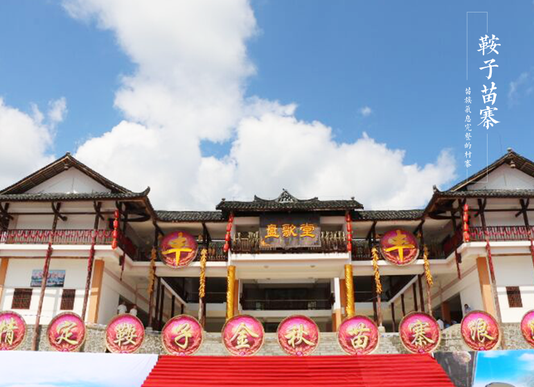

Pengshui county saddle the miao nationality garden, located in 46 kilometers XiangChang saddle from peng county town is located, including 1 set of stone mill rocks of the miao village, large pool god emperor Qian miao, saddle 1 set of the cloud disk of the miao village, etc., is a collection of song, miao, miao miao street dance, people village, miao cultures, customs, MiaoXiang natural scenery landscape in the integration of folk customs tourism scenic spot. As a result of this place, there is a luo family in exile. So far, the residents of the saddle are mostly luo.。
Luo jiaozi is surrounded by mountains, and the village is in the valley of the village. The integration of a nearby township is located in the plum, the buddhas, three saddle, Laurence family tuo east of plum village of oasis, the buddhas in the small village, deer horn and the north town village river cross road, connected with every saddle on which the family village, southwest belongs to rural village of new saddle four groups, 6 km from the township people's government, a total of ROM name of more than 80 households, more than 350 people, covers an area of 3 square kilometers (including forest area), one of them：Cultivated land area of 1500 mu, the original secondary forest area of 2500 mu, an average elevation of 800 meters, is a picturesque scenery, here, a pleasant climate, fertile land, species richness, miao well-preserved miao village。
Laurence family tuo still now continue the roche family its original flavor of the local conditions and customs, live is a park timberwork courtyard, Shi Haiba, diaojiao building, and "horse butt" folk house, the fire spread, ding three feet, POTS, cans, stone, stone mill, stone stool for life tools such as filter, grass, cattle, plow, hoes, hemp fiber for production tools, such as high back barrels, basket carriers, clamp for transport, prepared by the duke of zhou etiquette, marry a speak three media six card, according to the three returned to the customs of nine turns, banging away, horse riding a sedan marriage to paradise。To please musicians, after death chant prayer, filial piety into the coffin, open circuit, with the venue for many days (3, 5, 7, 11 January solstice range) can be buried, forty-nine days, outlaw off disaster loss is difficult, to be reborn, early to rise heaven. The roche family, can sing and dance, the mountain songs, the folk songs are beautiful, the long songs are not long。
